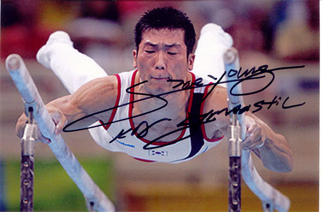

Yang Tae Young (KOR)
2004 Olympic AA Bronze
Medalist
2003 University Games AA Champion

Medal Total
Olympic Games: 1 Bronze
Was Yang the true winner at the 2004 Olympics? His start value on parallel bars was incorrectly calculated (it was scored from a 9.9 instead of a 10), and had that extra tenth been added to his score, Yang would have finished 0.051 ahead of the USA's Paul Hamm. FIG rules state that results cannot be changed after a competition has ended, so the FIG asked Hamm to give his gold medal to Yang. Hamm refused, Yang appealed to the Court of Arbitration and Sport, which ultimately dismissed the case.
Yang was born on July 8, 1980, in Seoul.
Competition
Results
2002
Asian Games: 2nd Team, 6th R
2003
Chunichi Cup: 7th
AA
University Games: 1st Team, 1st AA, 1st PB, 3rd V, 3rd HB
World Championships: 12th AA
2004
Olympic Games:
4th Team, 3rd AA, 10th HB
Pre-Olympic Test Event: 3rd AA, 4th V, 5th PH, 6th PB, 7th R
2005
World Championships: 8th PB
2006
World Championships: 7th AA, 6th PB
2007
World Championships: 5th Team, 8th AA
2008
Olympic Games: 5th Team, 8th AA, 7th PB
This page was created on May 26,
2009.
© Gymn Forum